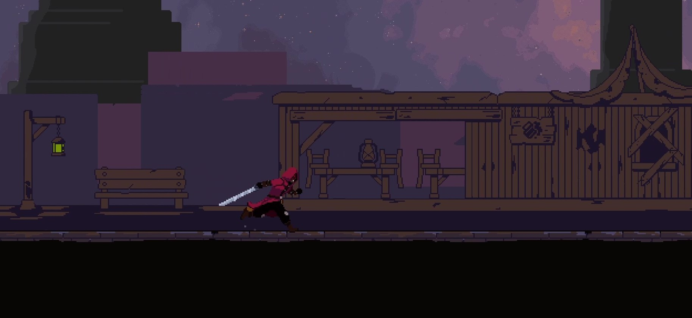
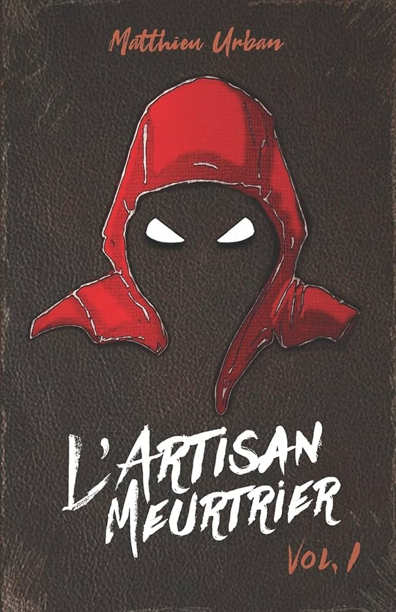
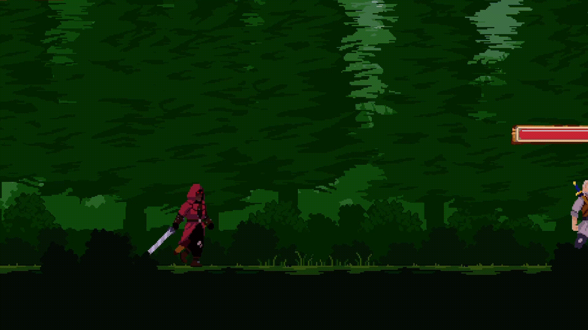
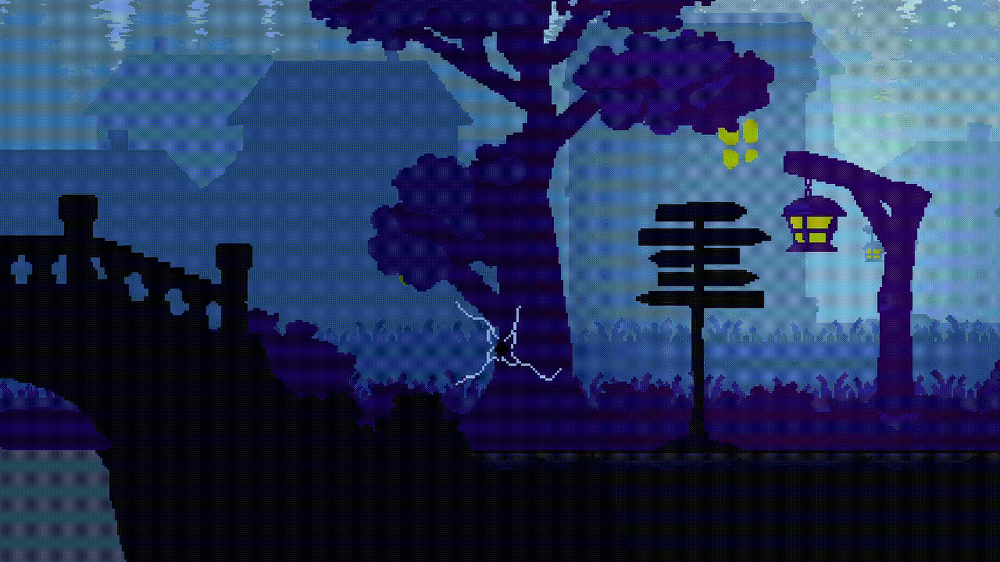
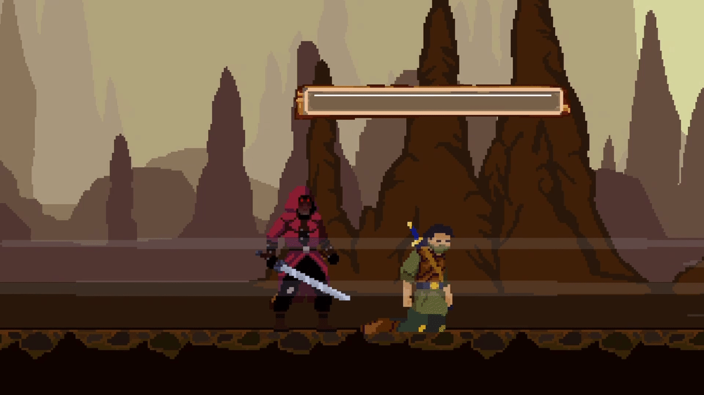

Artisan meurtrier
Contexte du projet
Dans le cadre de mon travail en freelance, j’ai été contacté par l’écrivain Matthieu Urban dans l’objectif de réaliser une démo de jeu reprenant l’univers dark fantasy de son livre.
Je me suis chargé de réaliser une partie des animations, de concevoir les mécaniques de jeu et de développer l'expérience sur Unity.

La conception du gameplay

Le cœur du jeu consiste à incarner Chef, un chasseur de primes, à travers différentes missions durant lesquelles il doit affronter plusieurs ennemis.
Le système de combat repose sur des mécaniques de parade et de riposte, conçues pour proposer une expérience exigeante et subtile à maîtriser.
La conception du système de combat et de l'intelligence artificielle des ennemis, puis leur développement sur Unity, ont constitué les principaux défis du projet.

